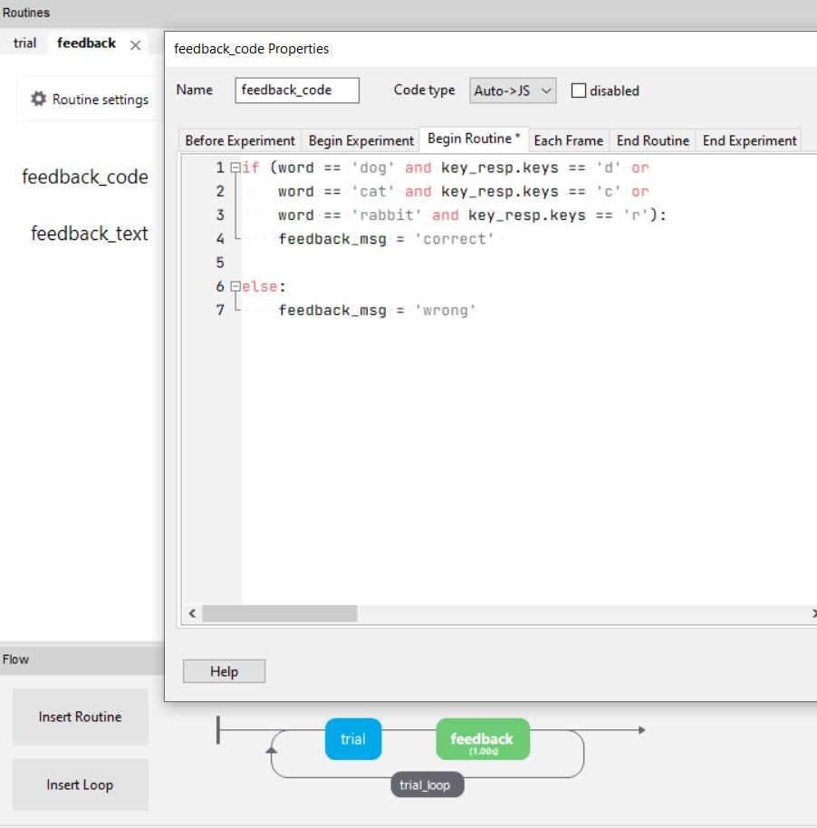

4 Verhaltensexperimente mit PsychoPy
Kurze Einführung in das Erstellen von Experimenten mit PsychoPy.
Dieser Kurs legt den Fokus auf verhaltenswissenschaftliche Forschung, die sich für die Gehirnprozesse von Menschen interessiert. Wir erstellen in PsychoPy von Grund auf zwei Experimente aus der Wahrnehmungs- und Entscheidungsforschung sowie der Neuropsychologie:
- Das Random Dot Experiment ist ein perzeptuelles Entscheidungsexperiment mit welchem wir den Einfluss von Anweisungen/Instruktionen auf Entscheidungen untersuchen.
- Das Stroop Experiment beinhaltet eine typische Aufgabe aus der (klinischen) Neuropsychologie zur Untersuchung von exekutiven Funktionen.
PsychoPy ist eine kostenfreie Software zum Erstellen von verhaltenswissenschaftlichen Experimenten im Labor oder Online. Die Software basiert auf der Programmiersprache Python, man kann die Experimente (mit gewissen Begrenzungen) jedoch auch in einem GUI (guided user interface) erstellen und braucht so (fast) keine Programmierkenntnisse. PsychoPy-Experimente ermöglichen präzise räumliche und zeitliche Kontrolle. (Peirce et al. 2019)
In PsychoPy erstellen Experimente können direkt auf Pavlovia hochgeladen, und so als Online-Experimente gehostet und durchgeführt werden. Die Speicherung des Experimentes auf gitlab ermöglicht dabei eine Versionskontrolle, sowie das Teilen des Experimentalcodes.
Wählen Sie eines der beiden Experimente, entweder das Random Dot Experiment oder das Stroop Experiment aus.
Lesen Sie die Beschreibung des Experiments durch und beantworten Sie die dort gestellten Fragen.
Erstellen Sie eine Flowchart zum geplanten Experiment. Fügen Sie Folgendes ein:
- Alle Elemente eines Experiments
- Wiederholungen von Elementen (mit einem Loop/Pfeil)
- Dauer von Elementen (z.B. in ms)
- Aufgenommene Daten (z.B. button press)
Tipps:
- Schauen Sie sich Paper, die dieses Experiment verwenden an.
- Zeichnen Sie die Flowchart auf einem Blatt Papier, in einem Programm wie Word/Excel oder R mit dem {
mermaidr}-Package. - In PsychoPy GUI werden Sie automatisch eine Art Flowchart angezeigt erhalten, wie hier ein Beispiel zeigt. Sie können diese angezeigte Flowchart dann jeweils mit Ihrer gezeichneten vergleichen und so den Überblick behalten.
Erstellen Sie das Experiment in PsychoPy. Untenstehend finden Sie einen Anleitung zum Vorgehen.
Wenn Sie genügend Zeit haben können Sie auch noch das andere Experiment programmieren.
[~90 Minuten]
Hilfreiche Informationen zum Erstellen von Experimenten in PsychoPy finden Sie hier:
4.1 Umgebung
4.1.1 Experiment-File erstellen und abspeichern
- Öffnen Sie PsychoPy und speichern Sie in einem dafür erstellten Ordner (z.B.
psychopy_experiment) das Experiment-File ab (z.B. unterexperiment_stroop-task).
4.1.2 Builder (GUI) und Coder?
Experimente können in PsychoPy mit dem Builder (in einem GUI) erstellt werden, der Python Code wird so automatisch für Sie generiert. Sie können sich diesen Code auch anschauen und verändern. Leider können Sie sobald Sie den Code verändert haben, diese Änderungen nicht zurück in den Builder übertragen. Im Builder-Modus können Sie aber Codestücke einfügen um einzelne Teile des Experiments in Python (oder anderen Programmiersprachen) zu programmieren und dennoch im Builder weiterarbeiten zu können.
4.2 Experiment erstellen
4.2.1 Stimuli
In PsychoPy finden Sie schon vorprogrammierte Stimulus Elemente, wie Gratings oder Rating Scales und können Texte, geometrische Figuren, Bilder und Filme einfügen. Auch komplexere Stimuluselemente wie Random Dots können sehr einfach konfiguriert werden ohne dass sie von Grund auf neu programmiert werden müssen.
Erstellen Sie einen Stimulus. Beachten Sie folgende Aspekte:
Farbe
Grösse
weitere Eigenschaften, wie Bedingung/Kongruenz?
Timing (Stimulusdauer, Stimulusende)
Notieren Sie, welche Eigenschaften des Stimulus sich über die Trials hinweg verändern sollte. Dies können auch mehrere Eigenschaften sein. Diese Liste benötigen Sie später.
4.2.2 Trial
Ergänzen Sie alle Elemente, die für einen vollständigen Trial notwendig sind:
Antwort der Versuchsperson / Response (siehe auch 4.2.4)
Inter-Trial-Intervall (ITI): kann vor oder nach dem Stimulus eingefügt werden. (Die Zeit des ITI wird oft variiert. Dies müsste also auch auf die Liste oben)
Fixationskreuz?
Mask?
Feedback?
4.2.3 Trialschleife
Sie müssen nicht alle Trials (oder in PsychoPy: Routines) des Experiments einzeln programmieren, sondern können diese wiederholen, in dem Sie eine Trial-Schleife (loop) um den Trial herum erstellen.
Erstellen Sie einen
loopindem Sie im FeldFlowaufInsert loopklicken.Mit
loopTypekönnen Sie steuern, die Bedingungen randomisiert/gemischt oder sequentiell/der Reihe nach angezeigt werden sollen.Mit
nRepskönnen Sie angeben, wie oft jeder Stimulus wiederholt werden soll. Haben Sie also einen Stimulus mit zwei zu varierenden Eigenschaften , welche je 3 Stufen haben (also 9 Zeilen imconditions-File undnReps= 2), ergibt das 18 Trials.
Mittels diesen Schleifen können die Bedingungen implementiert werden z.B. dass sich der Stimulus bei jedem Trial verändert. Dies kann mit einer conditions-Datei spezifiziert werden, idealerweise im .csv oder .xlsx-Format.
Beispielsweise wollen wir drei verschiedene Worte anzeigen (dog, cat und rabbit) und dieses Wort unterschiedlich lange anzeigen (Dauer: 1, 10 und 100 Frames). Die Versuchspersonen sollen dann den Anfangsbuchstaben des Wortes drücken, also d für dog, c für cat und r für rabbit.
Um die Bedingungen (in unserem Fall: die sich verändernden Stimuluseigenschaften) zu definieren, erstellen wir eine
.csvoder.xlsx-Datei (z.B. in Excel/Notepad/etc.) mit dem Namenconditionsund speichern dieses im selben Ordner wie das Experiment.Fügen Sie für jedes sich verändernde Element einen Variablennamen und die entsprechenden Werte ein (dies sind die Eigenschaften, die Sie sich bei Punkt 4.2.1 notiert haben). Die Variablennamen schreiben wir immer in die oberste Zeile der Datei.
Wenn wir z.B. einen Text anzeigen möchten, schreiben wir in die erste Zeile
wordundduration.In die Spalte unter die Variablennamen schreiben wir die Werte.
Als Beispiel könnten die Worte die wir anzeigen lassen wollen
cat,dogundrabbitlauten. Dann stehen in der Spalteword, diese 3 Wörter unter dem Variablennamen. Unter dem Variablennamendurationgeben wir die Anzahl Frames ein, also1,10und100. Wir wollen jedes Wort mit jeder Dauer kombinieren. Das ergibt 9 Zeilen.Fügen Sie in jeder Zeile unter dem Variablennamen
corrAnsdie jeweils korrekte Antwort ein.Fügen Sie, falls vorhanden, in jeder Zeile weitere wichtige Information zum Stimulus ein.
Im Beispiel möchten Sie z.B. später fleischfressende mit pflanzenfressenden Tieren vergleichen, deshalb eine Spalte
meat. Dies verändert im Experiment nichts, dient aber am Schluss zur Auswertung, weil diese Variable auch immer in den Datensatz geschrieben wird.

Fügen Sie nun im Loop-Fenster die
conditions-Datei ein.
Jede Zeile in der conditions-Datei unterhalb des Variablennamens entspricht einer Bedingung (condition).
Setzen Sie nReps auf 1 während Sie das Experiment erstellen, so sparen Sie Zeit.
Im PsychoPy können Sie Variablen mit einem vorangestellten $einfügen.
Öffnen Sie nun wieder das Stimulusfenster und passen Sie dort die Stimuluseigenschaften an. Anstatt von hard-coded values (also einmalig, fix festgelegten Werten) geben wir nun einen Variablennamen ein. Der Stimulus darf nicht auf
constantgesetzt sein, sonst kann er sich nicht Trial für Trial verändern, setzen Sie ihn deshalb unbedingt aufset every repeat.In unserem Beispiel fügen wir bei
textdie Laufvariable (verändernde Eigenschaft) ein:$word. Die Anzeigedauer des Textes soll$durationin Frames sein.
- Lassen Sie das Experiment laufen und kontrollieren Sie, ob alles funktioniert hat.
Mit dieser Methode können Sie auch Instruktionen, ITIs, etc. variieren lassen.
4.2.4 Antworten aufnehmen
In PsychoPy muss definiert werden, wie die Antwort der Versuchsperson aufgenommen wird. Dies kann mit der Maus, der Tastatur oder anderen Devices umgesetzt werden. Die Möglichkeiten sehen Sie unter Responses.
Fügen Sie eine Antwortkomponente hinzu und benennen Sie diese sinnvoll.
In unserem Beispiel möchten wir, dass die Versuchsperson mittels Keyboard antwortet.
Mit
Force end of Routinekönnen Sie einstellen, ob eine Antwort den Trial beendet und mit dem nächsten fortfährt.Der Namen der Antwortkomponente wird später im Datensatz als Variable zu finden sein.
Werden in einer Antwortkomponente namens
key_respmittels Tastendruck Antwort und Response Time aufgenommen, heissen die Variablen dannkey_resp.keys(gedrückte Taste) undkey_resp.rt(Antwortdauer).Entscheiden Sie, ob PsychoPy überprüfen soll, ob die richtige Antwort gegeben wurde.
Wenn Sie dies möchten, gleicht PsychoPy in unserem Beispiel die gegebene Antwort (
key_resp.keys) mit der dafür eingegebenen Variable (hiercorrAns) ab. Stimmen diese überein, fügt es in die Variablekey_resp.corr1 ein, wenn nicht 0).Mit
first keydefinieren Sie, dass der erste Tastendruck zählt.


4.2.5 Weitere Elemente
In PsychoPy GUI wird Ihnen im Fenster Floweine Art Flowchart angezeigt. Hier sehen Sie, welche Elemente Ihr aktuelles Experiment enthält.
Fügen Sie nun alle weiteren Elemente, die Sie zu Beginn auf Ihrer Flowchart eingezeichnet hatten, z.B.
Begrüssung
Einverständnis
Instruktion
Debriefing, Verabschiedung
Lassen Sie das Experiment laufen und kontrollieren Sie, ob alles funktioniert hat.
Beim Programmieren lohnt es sich oft, die kleinen Schritte zwischenzutesten, weil es dann einfacher ist herauszufinden, wo genau der Fehler passiert ist.
4.3 Datenspeicherung
Wenn man die default-Einstellungen nicht ändert, speichert PsychoPy die Daten automatisch in einer trial-by-trial .csv-Datei. Das bedeutet, dass jeder Trial 1 Zeile generiert. Die .csv-Datei erhält einen Namen, der sich aus der Versuchspersonen-ID, dem Namen des Experiments, und dem aktuellen Datum inkl. Uhrzeit zusammensetzt. So ist es möglich, mit derselben Versuchspersonen-ID beliebig oft das Experiment zu wiederholen. Die .csv-Dateien werden in einem Ordner mit dem Name data abgelegt.
In den Fenstern der Elemente kann jeweils angegeben werden, was alles gespeichert werden soll.
Bei der Wahl vom Datenfile-Namen empfiehlt es sich immer Datum und Uhrzeit anzuhängen. Dies verhindert, dass Daten überschrieben werden, wenn z.B. eine Versuchspersonen-ID falsch eingetippt oder doppelt vergeben wird.
Das oben verwendete Beispielsexperiment ergibt folgenden Datensatz:

Sie sehen die Infos aus der conditions-Datei (gelb), die Zählerinformationen der Loops (hellgrau), die Timinginformationen (dunkelgrau), die Antwortinformationen (blau) und die Experimentinformationen (grün).
4.4 Test / Pilotierung
Führen Sie das Experiment aus und schauen Sie sich den Datensatz an: Sind alle wichtigen Informationen auf jeder Zeile vorhanden?
Versuchspersonen-ID
Bedingung
Stimuluseigenschaften (z.B. word)
Antwort der Versuchsperson
Antwortdauer der Versuchsperson
Antwort korrekt?
Können die Daten überschrieben werden?
Lassen Sie jemanden anderes Ihr Experiment durchführen, und geben Sie einander Feedback.
4.5 Verwenden von Codekomponenten im Builder
Auch wenn man das Experiment im Builder erstellt erfordern einige Experimentelemente das Verwenden von Codekomponenten. In diesem Abschnitt werden zwei häufige Anwendungsbeispiele besprochen: Die variable Blockdauer (z.B. für Fixationskreuze oder ITIs) und das Geben von Feedback (z.B. in einem Übungsdurchgang).
In Python können Sie für verschiedene Fälle (cases) andere Aktionen ausfüllen, indem Sie If-else Statements nutzen.
Ein If-else Statement enthält ein if (wenn), einer condition (das zutrifft), einem body (dann mach das).
Ergänzt kann dies werden mit ifelse (oder wenn)+ condition (das zutrifft) + body (dann mach das) und einem else (wenn nichts davon zutrifft) + body (dann mach das).
Wichtig: - Python ist indentation-sensibel, das bedeutet: Die Einrückung (1 Tab) muss stimmen, sonst funktioniert der Code nicht. Auch der Doppelpunkt : ist wichtig und muss an der richtigen Stelle stehen. Wenn Sie mehrere conditions verwenden möchten, müssen Sie diese in Klammern () setzen. Hier sehen Sie die Syntax eines If-else Statements:
if (condition):
body
elif (condition):
body
else:
body4.5.1 Variable Dauer von Elementen
Fixationskreuz und ITI mit randomisierter Dauer
Um das Experiment für die Versuchsperson unvorhersehbarer zu machen, implementieren wir vor dem eigentlichen Stimulus ein Fixationskreuz mit variabler Länge. Diese Länge soll 0.2, 0.4, 0.6, oder 0.8 Sekunden betragen.
Fügen Sie einen Codeblock
code_fixationcrossein und definieren Sie unterBegin Routinedie Variablefixationcross_duration.Fügen Sie einen Textblock
fixationcrossein mit dem Text+und Schriftgrösse10. Geben Sie unterdurationIhre vorher definierte Variable ein (vergessen Sie dabei das$nicht):$fixationcross_duration.
Fügen Sie nach dem Stimulus eine ITI mit variabler Dauer hinzu.
Einfachere Variante: Die ITI soll 10, 20, 30, 40 oder 50 Frames betragen.
Schwierigere Variante: Die ITI soll eine Zufallszahl zwischen 0.2 und 0.8 Sekunden betragen.
4.5.2 Feedback
Es gibt Experimente, welche Feedback erfordern. Oft wird vor der Datenerhebung ein Übungsblock eingebaut, welcher Feedback enthält, so dass die Versuchspersonen wissen, ob sie den Task richtig verstanden haben.
Erstellen Sie zuerst eine Trialschleife mit einem Stimulus und einer Response.
Fügen Sie nach dem Stimulus und der Antwort (aber innerhalb der Trialschleife!) eine Routine
feedbackein.Fügen Sie innerhalb der Routine
feedbackeine Codekomponente hinzu. In dieser Komponente können Sie nun
Fügen Sie nun eine Textkomponente hinzu und fügen Sie beim Textfeld die Variable
$response_msgein, damit die Versuchsperson abhängig von ihrer Antwort das entsprechende Feedback erhält, welches zuvor in der Codekomponente definiert wurde.
Sie können mittels einer Codekomponente auch reagieren, wenn die Versuchsperson zu schnell, zu langsam oder gar nicht antwortet.
- Erstellen Sie einen Übungsdurchgang. Fügen Sie eine Code-Komponente hinzu und legen Sie fest, welches Feedback die Versuchsperson erhalten soll.
Einfache Variante: Geben Sie der Person Feedback, ob ihre Antwort richtig oder falsch war.
Mittelschwere Variante: Geben Sie der Person Feedback, wenn Sie zu schnell oder zu langsam antwortet.
Schwere Variante: Erstellen Sie einen Counter, welcher der Versuchsperson anzeigt, wie gut sie ist, indem für jede richtige Antwort 5 Punkte erhält, für jede falsche Antwort 5 Punkte abgezogen werden.
Falls Sie zur Geschwindigkeit Rückmeldung geben wollen oder einen Counter bauen, können Sie etwas in dieser Art machen.
if dots_keyboard_response.keys is None:
response_text = "miss"
elif dots_keyboard_response.rt <= 0.1:
response_text = "too fast"
else:
if (direction == "left" and dots_keyboard_response.keys == "f" or
direction == "right" and dots_keyboard_response.keys == "j"):
response_text = "+5 points"
else:
response_text = "+0 points"
4.6 Weitere wichtige Punkte
4.6.1 Degrees of Visual Angle
Oftmals werden Grössenangaben von Stimuli noch in Pixel oder Zentimeter, sondern in degrees of visual angle gemacht. Dies hat den Vorteil, dass die Angaben nicht vom Monitor selber oder der Entferung vom Monitor abhängig sind. Degrees of visual angle gibt die wahrgenommene Grösse des Stimulus an, und berücksichtigt die Grösse des Monitors und des Stimulus, und die Entfernung der Versuchsperson vom Monitor. Weitere Informationen dazu finden Sie auf der Website von OpenSesame. Üblicherweise entspricht ein degrees of visual angle etwa einem cm bei einer Entfernung von 57 cm vom Monitor.
Zur Umrechnung zwischen cm und degrees of visual angle finden Sie unter diesem Link mehr Information.
4.6.2 Timing
Frames vs. time (sec or ms): Die präziseste Art zur Steuerung des Timings von Stimuli besteht darin, sie für eine festgelegte Anzahl von Frames zu präsentieren. Bei einer Framerate von 60 Hz können Sie Ihren Stimulus nicht z. B. 120 ms lange präsentieren; die Bildperiode würde Sie auf einen Zeitraum von 116,7 ms (7 Bilder) oder 133,3 ms (8 Bilder) beschränken. Dies ist besonders wichtig für Reaktionszeit-Aufgaben und EEG-Studien, wo ein präzises Millisekunden-Timing erforderlich ist. Hier finden Sie weitere Informationen zu diesem Thema: Presening Stimuli - Psychopy.
4.6.3 Individualisierte Aufgabenschwierigkeit / Schwellenmessung
Im Random Dot Experiment macht es z.B. für gewisse Fragestellungen Sinn die Aufgabenschwierigkeit für jede Person anzupassen, da sonst ceiling/floor-Effekte auftreten können.
In PsychoPy kann ein Staircase in einem Loop verwendet werden, um die Schwierigkeit einer Aufgabe basierend auf der Leistung der Teilnehmer dynamisch anzupassen. Sie ist besonders häufig in Experimenten zur Schwellenmessung, bei denen das Ziel darin besteht, die kleinste wahrnehmbare Reizintensität zu bestimmen. Hier finden Sie weitere Informationen zu diesem Thema: Using a Staircase - PsychoPy.